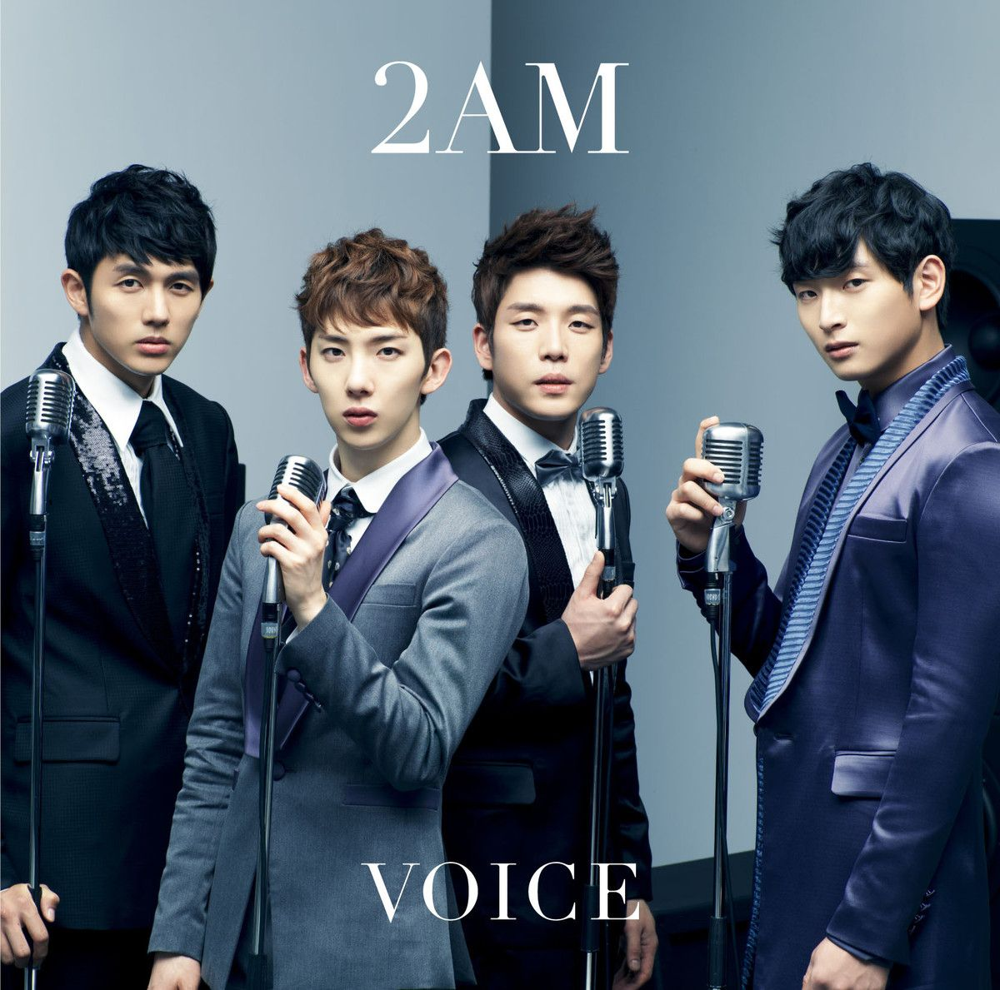
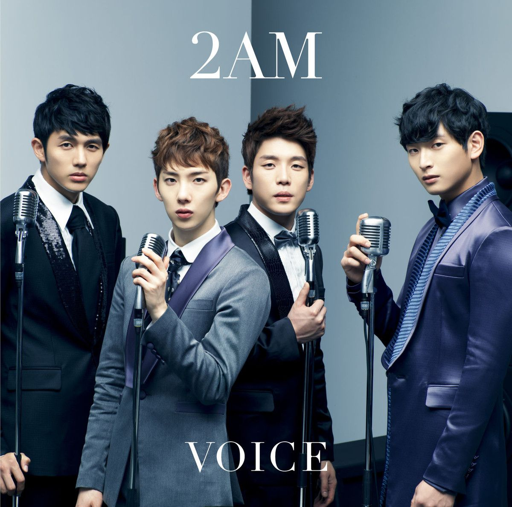

2AM released their first full-length Japan Album titled Voice on January 9, 2013. The album collected the tracks from their Japanese singles released to date. On March 5, 2013, 2AM released their full-length album, One Spring Day. The band released their EP, Nocturne, on November 19, 2013. The EP included 5 tracks. Due to member Jung Jinwoon's injury, 2AM did not promote the album on music programs. Members Seulong, Jo Kwon, and Jinwoon all officially switched their contracts back to JYP Entertainment after their contracts with Big Hit Entertainment expired in April, while Changmin stayed with Big Hit due to his involvement with Homme. A new album, Let's Talk would be the first under JYP Entertainment, after releasing their previous albums with Big Hit Entertainment.
In March 2015 Seulong and Jinwoon decided not to renew their contracts with JYP Entertainment and would sign to other agencies. While Changmin ended his contract in August 2015, JYP Entertainment assured that the departures did not mean 2AM was breaking up. On September 22, 2017, Jo Kwon parted ways with JYP Entertainment. He stated that, despite his departure from JYP Entertainment, 2AM had not disbanded and that the other members had clauses in their individual contracts which would allow them to promote as 2AM in the future. On November 28, 2017, Seulong enlisted for his mandatory military service. In August 2018, Jo Kwon enlisted for his mandatory military service On January 17, 2019, it was announced Jinwoon would enlist in March. He will be the final member to enlist, due to Changmin's service completion in 2008.
 
